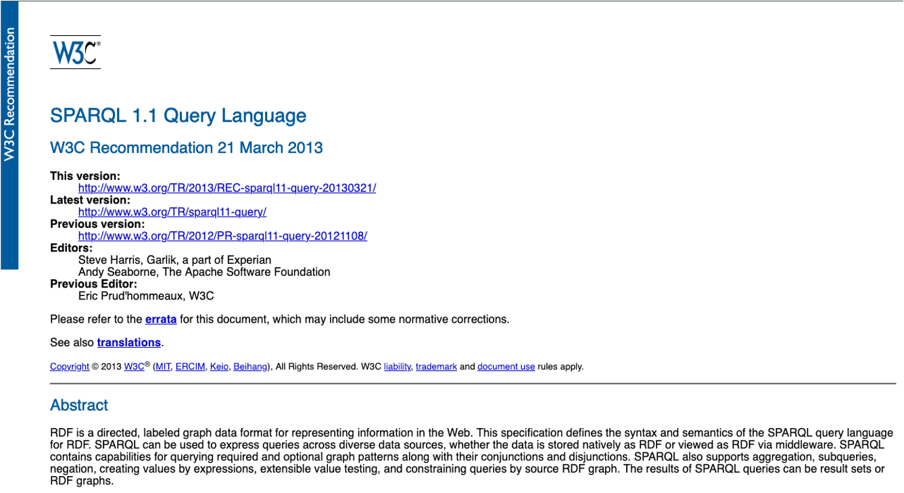
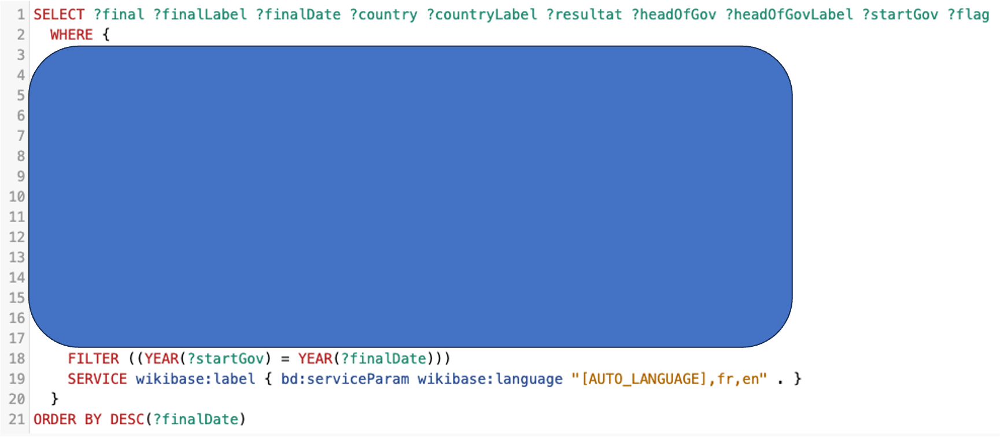

Le langage qui interroge les graphes de connaissances.

Source : w3.org/TR/sparql11-overview
Le langage standard du W3C pour interroger n'importe quel graphe RDF, qu'il fasse dix triplets ou dix milliards.
Cette requête, montrée au chapitre 1, croisait les finales de Coupe du Monde FIFA et les chefs de gouvernement en poste. C'était déjà du SPARQL, sur Wikidata.

Ce chapitre apprend à lire, puis à écrire, exactement ce genre de requête.
Sélectionner les joueurs espagnols, en SQL puis en SPARQL.
SQL
SELECT nom
FROM Joueurs
WHERE nationalite-fr = 'Espagne';SPARQL
PREFIX ex: <http://example.org/>
SELECT ?nom
WHERE {
?joueur a ex:Joueur ;
ex:nom ?nom ;
ex:nationalite "Espagne"@fr .
}Un motif de triplet (triple pattern) est un triplet où sujet, prédicat et objet peuvent chacun, indépendamment, être remplacés par une variable préfixée par ? : une seule position, plusieurs, ou les trois à la fois.
1 variable
?x a ex:Joueur .Tous les ?x de type ex:Joueur : tous les joueurs du graphe.
2 variables
?x ex:aBattu ?y .Toute paire ?x/?y où ?x a battu ?y : tous les résultats de matchs du graphe.
3 variables
?x ?y ?z .Absolument tous les triplets du graphe, sans exception.
Le symbole $ peut aussi préfixer une variable, à la place de ?
(autorisé par la norme, mais très rarement utilisé en pratique).
Le WHERE peut contenir plusieurs motifs de triplet. Ensemble, ils forment un motif de graphe (graph pattern) : un petit graphe à trous, que l'on superpose au graphe de données.
WHERE {
?j a ex:Joueur .
?j ex:aBattu ex:sinner .
}La même variable ?j dans les deux lignes :
c'est elle qui les joint, sans JOIN à écrire.
On obtient tous les ?j qui sont des joueurs et qui ont battu Sinner.
| Forme | Résultat |
|---|---|
SELECT | Une table de résultats (comme SQL) |
CONSTRUCT | Un nouveau graphe RDF |
ASK | Un booléen : vrai ou faux |
DESCRIBE | Une description d'une ressource |
SELECT pour explorer, CONSTRUCT pour matérialiser,ASK pour vérifier, DESCRIBE pour documenter.
PREFIX ex: <http://example.org/>
SELECT ?nom
WHERE {
?joueur ex:nom ?nom .
}→ PREFIX déclare les abréviations, SELECT choisit les variables à afficher, WHERE contient les motifs à faire correspondre.
Trois joueurs et deux pays. La nationalité des joueurs pointe vers un pays, pas vers un texte :
c'est ce pays qui porte ses noms en français et en anglais.
Le schéma précédent n'est qu'une autre façon de lire ces triplets.
TurtlePREFIX ex: <http://example.org/>
ex:j1 a ex:Joueur ; ex:nom "Carlos Alcaraz" ; ex:nationalite ex:pays1 .
ex:j2 a ex:Joueur ; ex:nom "Rafael Nadal" ; ex:nationalite ex:pays1 .
ex:j3 a ex:Joueur ; ex:nom "Jannik Sinner" ; ex:nationalite ex:pays2 .
ex:pays1 a ex:Pays ; ex:nom "Espagne"@fr, "Spain"@en .
ex:pays2 a ex:Pays ; ex:nom "Italie"@fr, "Italy"@en .On construit la réponse en trois motifs, un à la fois :
PREFIX ex: <http://example.org/>
SELECT ?x WHERE {
?x a ex:Joueur .
}Trois résultats : tous les ex:Joueur.
| ?x |
|---|
ex:j1 |
ex:j2 |
ex:j3 |
PREFIX ex: <http://example.org/>
SELECT ?x WHERE {
?x a ex:Joueur ;
ex:nationalite ?pays ;
ex:nom ?nom .
}Toujours trois résultats : chaque joueur est bien relié à son pays (ex:pays1 ou ex:pays2), mais le motif ne filtre pas encore lequel.
PREFIX ex: <http://example.org/>
SELECT ?x ?nom WHERE {
?x a ex:Joueur ;
ex:nationalite ?pays ;
ex:nom ?nom .
?pays ex:nom "Espagne"@fr .
}→ On ne recherche jamais une ressource par son IRI
PREFIX ex: <http://example.org/>
SELECT ?x ?nom WHERE {
?x a ex:Joueur ;
ex:nationalite ?pays ;
ex:nom ?nom .
?pays ex:nom "Espagne"@fr .
}| ?x | ?nom |
|---|---|
ex:j1 | "Carlos Alcaraz" |
ex:j2 | "Rafael Nadal" |
ex:j3 était bien un joueur, mais son pays ne porte pas le nom «Espagne»@fr.
?x a ex:Joueur .PREFIX, SELECT, WHERE : la structure que toute requête SPARQL partage.Ce petit graphe était volontairement abstrait, pour se concentrer sur le mécanisme. En 4.2, nous appliquons exactement les mêmes motifs à ce même graphe, étendu avec un match et un stade, pour filtrer, joindre et trier.
Le même graphe, interrogé de plus en plus finement.
C'est le graphe de 4.1 : trois joueurs, deux pays. On va le réutiliser tel quel et l'étendre au fil de ce chapitre.
Un classement ATP est un simple nombre attaché au joueur, pas une ressource à part entière. ex:j2 (Nadal) n'en a pas.
Un match relie son vainqueur et son perdant : ici, Alcaraz a battu Sinner en demi-finale Roland-Garros 2024. Comme pour les joueurs, l'IRI du match (ex:match_345) est opaque : son nom lisible vit dans un triplet ex:nom séparé.
Le match a aussi eu lieu quelque part. Même principe : ex:court_812 est un IRI opaque, son nom "Court Philippe-Chatrier" vit dans son propre triplet ex:nom.
"Dans quels stades Alcaraz a-t-il gagné ?"
"Dans quels stades Alcaraz a-t-il gagné ?"
SPARQLPREFIX ex: <http://example.org/>
SELECT ?nomStade WHERE {
?joueur ex:nom "Carlos Alcaraz" .
?match ex:vainqueur ?joueur ;
ex:lieu ?stade .
?stade ex:nom ?nomStade .
}→ On retrouve Alcaraz par son nom, jamais en écrivant son IRI (ex:j1) directement : les IRIs sont opaques.
| ?nomStade |
|---|
| "Court Philippe-Chatrier" |
Imaginons qu'Alcaraz ait gagné deux matchs sur le même stade : deux triplets ex:vainqueur, un seul stade.
ex:match_345 ex:vainqueur ex:j1 ; ex:lieu ex:court_812 .
ex:match_678 ex:vainqueur ex:j1 ; ex:lieu ex:court_812 .La même jointure, sans DISTINCT :
| ?nomStade |
|---|
| "Court Philippe-Chatrier" |
| "Court Philippe-Chatrier" |
↛ Une ligne par match, pas par stade : le même nom sort deux fois.
"Dans quels stades Alcaraz a-t-il gagné ?" (sans doublon)
SPARQLPREFIX ex: <http://example.org/>
SELECT DISTINCT ?nomStade WHERE {
?joueur ex:nom "Carlos Alcaraz" .
?match ex:vainqueur ?joueur ;
ex:lieu ?stade .
?stade ex:nom ?nomStade .
}→ DISTINCT élimine les doublons du résultat : une même ligne n'apparaît qu'une fois.
| ?nomStade |
|---|
| "Court Philippe-Chatrier" |
"Quels joueurs sont classés dans le top 5 mondial ?"
"Quels joueurs sont classés dans le top 5 mondial ?"
SPARQLPREFIX ex: <http://example.org/>
SELECT ?nom WHERE {
?joueur ex:nom ?nom ;
ex:classementATP ?rang .
FILTER(?rang < 5)
}→ FILTER ne garde que les lignes où la condition est vraie.
| ?nom |
|---|
| "Carlos Alcaraz" |
| "Jannik Sinner" |
"Quels sont les noms et classements de tous les joueurs, même sans classement ?"
"Quels sont les noms et classements de tous les joueurs, même sans classement ?"
SPARQLPREFIX ex: <http://example.org/>
SELECT ?nom ?rang WHERE {
?joueur ex:nom ?nom .
OPTIONAL { ?joueur ex:classementATP ?rang . }
}→ OPTIONAL garde la ligne même si son motif ne correspond à rien : la variable reste alors non liée.
| ?nom | ?rang |
|---|---|
| "Carlos Alcaraz" | 2 |
| "Rafael Nadal" | non liée |
| "Jannik Sinner" | 3 |
"Et si on filtre ce classement optionnel ?"
"Et si on filtre ce classement optionnel ?"
SPARQLPREFIX ex: <http://example.org/>
SELECT ?nom ?rang WHERE {
?joueur ex:nom ?nom .
OPTIONAL { ?joueur ex:classementATP ?rang . }
FILTER(?rang < 10)
}↛ Rafael Nadal a disparu : sa ?rang non liée fait échouer FILTER silencieusement, comme si OPTIONAL n'avait servi à rien.
| ?nom | ?rang |
|---|---|
| "Carlos Alcaraz" | 2 |
| "Jannik Sinner" | 3 |
PREFIX ex: <http://example.org/>
SELECT ?nom ?rang WHERE {
?joueur ex:nom ?nom .
OPTIONAL {
?joueur ex:classementATP ?rang .
FILTER(?rang < 10)
}
}→ La condition est déplacée à l'intérieur du bloc OPTIONAL : si ?rang n'existe pas, FILTER ne s'exécute même pas, et la ligne survit non liée.
| ?nom | ?rang |
|---|---|
| "Carlos Alcaraz" | 2 |
| "Rafael Nadal" | non liée |
| "Jannik Sinner" | 3 |
"Quels joueurs ont participé à la demi-finale Roland-Garros 2024, comme vainqueur ou comme perdant ?"
"Quels joueurs ont participé à la demi-finale Roland-Garros 2024, comme vainqueur ou comme perdant ?"
SPARQLPREFIX ex: <http://example.org/>
SELECT ?nom WHERE {
?match ex:nom "Demi-finale Roland-Garros 2024" .
{ ?match ex:vainqueur ?j . }
UNION
{ ?match ex:perdant ?j . }
?j ex:nom ?nom .
}→ Des motifs juxtaposés se combinent par un ET (tous doivent correspondre). UNION introduit un OU : il suffit que l'un des deux motifs corresponde.
| ?nom |
|---|
| "Carlos Alcaraz" |
| "Jannik Sinner" |
Une confusion classique : les deux ressemblent à un filtre négatif, mais ne font pas la même chose.
Garde toutes les lignes. Si le motif ne correspond pas, la variable reste simplement non liée.
Exclut carrément la ligne si le motif correspond. Sert à écarter des résultats, jamais à les enrichir.
"Quel joueur n'a jamais de classement ATP ?"
"Quel joueur n'a jamais de classement ATP ?"
SPARQLPREFIX ex: <http://example.org/>
SELECT ?nom WHERE {
?joueur ex:nom ?nom .
MINUS { ?joueur ex:classementATP ?rang . }
}→ MINUS exclut les lignes qui correspondent à un second motif, sans jamais en ajouter.
| ?nom |
|---|
| "Rafael Nadal" |
"Qui est le mieux classé parmi les joueurs classés ?"
"Qui est le mieux classé parmi les joueurs classés ?"
SPARQLPREFIX ex: <http://example.org/>
SELECT ?nom ?rang WHERE {
?joueur ex:nom ?nom ;
ex:classementATP ?rang .
}
ORDER BY ?rang
LIMIT 1→ ORDER BY trie les résultats selon une variable, LIMIT n'en garde qu'un nombre fixé.
| ?nom | ?rang |
|---|---|
| "Carlos Alcaraz" | 2 |
Le vrai usage d'OFFSET : découper un long résultat en pages, comme la page 2 d'une liste de recherche. Avec LIMIT 1, une page ne contient qu'un joueur ; OFFSET 1 saute la première page pour afficher la seconde.
SELECT ?nom WHERE {
?joueur ex:nom ?nom ; ex:classementATP ?rang .
}
ORDER BY ?rang
LIMIT 1
OFFSET 1"Jannik Sinner"
→ La page 1 (OFFSET 0) aurait renvoyé Alcaraz. En pratique, on fait avancer OFFSET par pas de LIMIT pour tourner les pages.
ORDER BY sans LIMIT doit trier tout le résultat avant de répondre.
Toujours ajouter LIMIT en phase d'exploration d'un grand graphe.
Résumer un graphe, en construire un autre, vérifier un fait.
Combien de joueurs le graphe connaît-il ? COUNT compte les liaisons de ?joueur, sans les lister une par une.
SELECT (COUNT(?joueur) AS ?nb) WHERE {
?joueur a ex:Joueur .
}?nb → 3
→ Une seule ligne de résultat : COUNT résume tout le résultat en un nombre.
Compter les joueurs par nationalité, pas seulement au total : GROUP BY sépare d'abord les lignes en groupes, un par valeur de ?pays, avant que COUNT compte à l'intérieur de chacun.
SELECT ?pays (COUNT(?joueur) AS ?nb) WHERE {
?joueur ex:nationalite ?pays .
}
GROUP BY ?paysex:pays1 → 2 · ex:pays2 → 1
→ On groupe sur la ressource ?pays, pas sur son nom : ce dernier a plusieurs variantes de langue (4.1), qui casseraient le regroupement.
Ne garder que les pays avec plus d'un joueur : FILTER filtrerait des lignes avant le groupement, HAVING filtre des groupes après.
SELECT ?pays (COUNT(?joueur) AS ?nb) WHERE {
?joueur ex:nationalite ?pays .
}
GROUP BY ?pays
HAVING(COUNT(?joueur) > 1)ex:pays1 → 2
→ ex:pays2 n'a qu'un seul joueur : son groupe est écarté par HAVING, pas affiché du tout.
SELECT (AVG(?rang) AS ?rangMoyen) WHERE {
?joueur ex:classementATP ?rang .
}BIND(expression AS ?variable) calcule une valeur et lui donne un nom : ici, un booléen calculé avant de grouper dessus.
SELECT ?estTop2 (COUNT(?joueur) AS ?nb) WHERE {
?joueur ex:classementATP ?rang .
BIND(?rang <= 2 AS ?estTop2)
}
GROUP BY ?estTop2true → 1 · false → 1
→ BIND crée ?estTop2 avant le GROUP BY : c'est cette nouvelle variable, ici un simple booléen, qui sert de clé de regroupement.
SELECT imbriquéLes joueurs mieux classés que la moyenne : la sous-requête calcule d'abord cette moyenne, la requête principale la réutilise.
SPARQLSELECT ?nom WHERE {
?joueur ex:nom ?nom ; ex:classementATP ?rang .
{
SELECT (AVG(?r) AS ?moyenne) WHERE {
?j ex:classementATP ?r .
}
}
FILTER(?rang < ?moyenne)
}"Carlos Alcaraz"
→ La moyenne des classements (2 et 3) vaut 2.5 : seul Alcaraz (2) passe sous ce seuil.
Fournir directement un jeu de valeurs dans la requête, sans les tirer du graphe : ici, deux noms à vérifier.
SPARQLSELECT ?nom WHERE {
VALUES ?nom { "Carlos Alcaraz" "Novak Djokovic" }
?joueur ex:nom ?nom .
}"Carlos Alcaraz"
→ VALUES propose deux noms, mais "Novak Djokovic" n'existe pas dans le graphe : seul un vrai match est renvoyé.
SELECT n'est qu'une des quatre formes vues en 4.1 : les trois autres renvoient autre chose qu'une table.
Fabriquer un raccourci ex:aBattu à partir de deux faits déjà présents dans le graphe.
CONSTRUCT { ?vainqueur ex:aBattu ?perdant . }
WHERE {
?match ex:vainqueur ?vainqueur ;
ex:perdant ?perdant .
}→ Le résultat est un nouveau graphe RDF, pas une table : ici, un seul triplet.
"Rafael Nadal a-t-il un classement ATP renseigné dans notre graphe ?"
SPARQLASK {
ex:j2 ex:classementATP ?rang .
}false
→ Un booléen, pas une table : idéal pour une simple vérification.
La quatrième forme vue en 4.1 : demander tout ce que le graphe sait sur une ressource, sans écrire le moindre motif.
SPARQLDESCRIBE ex:j1Réponse typique, sous forme de graphe :
Turtleex:j1 a ex:Joueur ;
ex:nom "Carlos Alcaraz" ;
ex:nationalite ex:pays1 ;
ex:classementATP 2 .→ Un nouveau graphe RDF, comme CONSTRUCT, mais son contenu dépend du triplestore : la requête ne précise pas elle-même quels triplets inclure.
Le vocabulaire d'expressions disponible dans FILTER et BIND.
| Opérateur | Catégorie | Effet |
|---|---|---|
! || && | Logique | Négation, OU, ET |
= != | Égalité | Termes identiques ou non |
< > <= >= | Comparaison | Ordre entre nombres, dates, chaînes |
+ - * / | Arithmétique | Opérations sur des nombres |
>= et &&PREFIX ex: <http://example.org/>
SELECT ?nom WHERE {
?joueur ex:nom ?nom ; ex:classementATP ?rang .
FILTER(?rang >= 2 && ?rang <= 10)
}→ && combine deux comparaisons : la ligne survit seulement si les deux sont vraies.
| ?nom |
|---|
| "Carlos Alcaraz" |
| "Jannik Sinner" |
| Fonction | Effet |
|---|---|
bound(?x) | Vrai si ?x est liée |
if(cond, a, b) | a si cond est vraie, b sinon |
coalesce(...) | Première valeur définie parmi plusieurs |
exists {...} / not exists {...} | Vrai si le motif a / n'a pas de solution |
sameTerm(a, b) | Vrai si a et b sont exactement le même terme |
in / not in | Vrai si le terme figure / ne figure pas dans une liste |
IFPREFIX ex: <http://example.org/>
SELECT ?nom (IF(BOUND(?rang), ?rang, "non classé") AS ?rangAffiche) WHERE {
?joueur ex:nom ?nom .
OPTIONAL { ?joueur ex:classementATP ?rang . }
}→ IF choisit entre deux valeurs selon une condition : ici, un texte de repli à la place d'un ?rang non liée, elle-même détectée par BOUND.
| ?nom | ?rangAffiche |
|---|---|
| "Carlos Alcaraz" | 2 |
| "Rafael Nadal" | "non classé" |
| "Jannik Sinner" | 3 |
| Fonction | Effet |
|---|---|
isIRI / isBlank / isLiteral / isNumeric | Teste le type du terme |
str(x) | Valeur textuelle d'un IRI ou d'un littéral |
lang(l) | Étiquette de langue d'un littéral |
datatype(l) | Type de données d'un littéral |
iri(s) | Construit un IRI à partir d'une chaîne |
bnode() | Crée un nouveau nœud vide |
strdt / strlang | Construit un littéral typé / avec langue |
uuid() / struuid() | Identifiant unique généré (IRI / chaîne) |
LANGPREFIX ex: <http://example.org/>
SELECT ?nomPays WHERE {
?pays ex:nom ?nomPays .
FILTER(LANG(?nomPays) = "fr")
}→ LANG lit l'étiquette de langue d'un littéral : ici, on ne garde que les noms en français.
| ?nomPays |
|---|
| "Espagne"@fr |
| "Italie"@fr |
| Fonction | Effet |
|---|---|
strlen(s) | Longueur de s |
substr(s, début, [longueur]) | Sous-chaîne de s |
ucase / lcase | Majuscules / minuscules |
strstarts / strends | s commence / finit par p |
strbefore / strafter | Texte avant / après la première occurrence de p |
concat(...) | Concatène plusieurs chaînes |
regex(s, p, [flags]) | Vrai si s correspond à l'expression régulière p |
replace(s, p, r, [flags]) | Remplace les occurrences de p par r dans s |
STRSTARTSPREFIX ex: <http://example.org/>
SELECT ?nom WHERE {
?j ex:nom ?nom .
FILTER STRSTARTS(?nom, "Carlos")
}→ STRSTARTS teste le début d'une chaîne : seul un nom commençant par "Carlos" passe le filtre.
| ?nom |
|---|
| "Carlos Alcaraz" |
| Fonction | Effet |
|---|---|
abs(n) | Valeur absolue |
round(n) | Arrondi à l'entier le plus proche (vers +∞ si *.5) |
ceil(n) | Arrondi à l'entier supérieur |
floor(n) | Arrondi à l'entier inférieur |
rand() | Nombre aléatoire entre 0 et 1 |
ROUNDSELECT (ROUND(2.5) AS ?score) WHERE {}→ ROUND arrondit à l'entier le plus proche : un *.5 arrondit toujours vers le haut.
| ?score |
|---|
| 3 |
| Fonction | Effet |
|---|---|
now() | Date et heure actuelles |
year / month / day | Composante d'une date |
hours / minutes / seconds | Composante d'une heure |
timezone / tz | Fuseau horaire d'une date |
YEARPREFIX xsd: <http://www.w3.org/2001/XMLSchema#>
SELECT (YEAR("2024-06-07"^^xsd:date) AS ?annee) WHERE {}→ YEAR extrait l'année d'une date : celle de la demi-finale Roland-Garros 2024.
| ?annee |
|---|
| 2024 |
| Fonction | Effet |
|---|---|
md5(s) | Empreinte MD5 de s |
sha1 / sha256 / sha384 / sha512 | Empreinte SHA de s, à différentes longueurs |
MD5SELECT (MD5("Carlos Alcaraz") AS ?hash) WHERE {}→ MD5 calcule une empreinte à sens unique : la même chaîne produit toujours le même hash.
| ?hash |
|---|
| "1d937f1041a27ca646e9130c768dac43" |
Où vivent les graphes que l'on interroge.
| Triplestore | Utilisé par |
|---|---|
| Virtuoso | DBpedia, UniProt |
| Blazegraph | Wikidata (historiquement) |
| Apache Jena Fuseki | Projets open source, prototypage |
| GraphDB (Ontotext) | Le triplestore de ce cours |
Un triplestore expose son graphe via une URL HTTP qui accepte des requêtes SPARQL : le endpoint. C'est le "SPARQL Protocol", la deuxième moitié du standard, à côté du langage lui-même.
https://query.wikidata.org/sparql
C'est exactement cet endpoint que la démo FIFA du chapitre 1 interrogeait.
La clause SERVICE délègue une partie du motif à un endpoint distant, et combine le résultat avec le reste de la requête locale.
SELECT ?nom ?paysWikidata WHERE {
ex:j1 ex:nom ?nom .
SERVICE <https://query.wikidata.org/sparql> {
wd:Q85518537 wdt:P27 ?paysWikidata .
}
}→ Une partie locale, une partie distante, une seule requête. Le même principe que la démo FIFA du chapitre 1.
Chaque bloc SERVICE est un aller-retour HTTP séparé vers un serveur distant.
Les travaux pratiques de ce module utilisent GraphDB (Ontotext) : un triplestore avec son propre endpoint SPARQL, et surtout OntoRefine intégré pour construire un graphe depuis un tableur, sujet du chapitre 5.
SPARQL interroge un graphe par filtrage de motifs de triplets (pattern matching), pas par jointure de tables à schéma fixe. Les variables partagées font office de jointure.
Quatre formes de requête : SELECT (table), CONSTRUCT (nouveau graphe), ASK (booléen), DESCRIBE (description d'une ressource).
FILTER ajoute des conditions, OPTIONAL garde une ligne même sans correspondance, UNION combine des motifs alternatifs, MINUS exclut plutôt qu'il n'enrichit.
GROUP BY et les agrégats (COUNT, AVG...) résument un graphe en chiffres. ORDER BY sans LIMIT reste un piège sur un grand graphe.
Un triplestore stocke le graphe, un endpoint l'expose en HTTP, la fédération (SERVICE) combine plusieurs endpoints en une seule requête. Ce cours utilise GraphDB.
RDF décrit, RDFS/OWL déduisent, SPARQL interroge. Reste à voir comment construire un graphe à partir de données existantes : c'est l'objet du chapitre suivant.